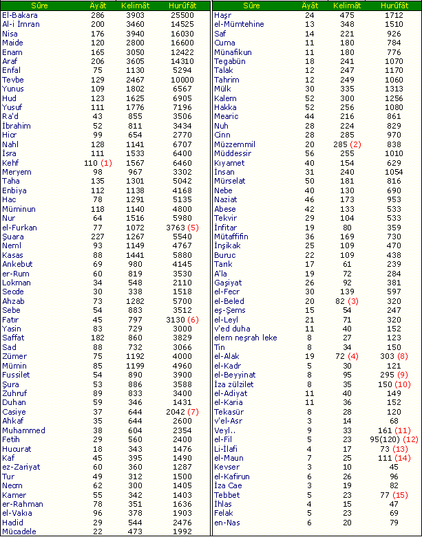

|
Liste |
  
|
|
Liste |
|

Bu liste çendan bir derece takribidir. Fakat küsurlarýn ihtilafýna bakmayan tevâfuk esrarýna me'haz olabilir. sûre-i el-Bakara kelimatý tefsîr-ül Mikyas üçbinüçyüz yazmýþ biz üçbindokuzyüz yazmýþýz. Halbuki: Zahire göre her ikimiz de noksan býrakmýþýz. Fakat hakikat itibariyle her birimiz bir cihette haklýyýz. Çünkü kelimat-ý örfýyenin iki mertebesi var.
Birinci Mertebesi: O kelime bir derece maksud bir manayý, bir hükmü ifade eder. Adeta Ýlm-i Nahivce nakýs cümle hükmündedir.
Ýkinci Mertebesi: Geniþlikçe evvelki mertebeden aþaðý, fakat kelimat-ý nahviyeden yukarýdýr. Ýþte Ýbni Abbas'a ve rivayete istinaden o meþhur tefsîr sûre-i Bakara'da Birinci Mertebe nokta-i nazarýnda hesab etmiþ ve buna iþareten kelimat yerine kelamlarý demiþ. Sair sûrelerin ekserisinde Ýkinci Mertebe ile hesab ettiði görünüyor. Benim eski mahfuzatým bu tarzdaki tefsîrlere ve rivayete istinad etmiþ. Þimdi ise; El Bakara sûresinin nahvi cümlelerini saydým. Onlar üçbinden geçti. Demek Birinci Mertebedeki kelimat-ý örfiye üçbin küsur oluyor.
Hem Ýkinci Mertebe ile Birinci Mertebe ortasýnda saydým. Üçbindokuzyüz küsür oldu. Hakikat-i hal böyle olduðu için matbaa ve müstensihlerin sehv ve hatalarýndan baþka o tefsîri esas kabul etmek lazým gelir. Fakat beþ altý mühim yerlerde ve on ve onbeþ cüz'i ve küsürlü yerlerde ona muhalefet etmeye mecbur oldum. Çünkü tahkikatýmla anladým ki: Matbaa ve müstensihler sehv etmiþler. Her ne ise bu listeyi yazmaya mecbur oldum. Çünkü: tevâfukât anahtarýyla açýlan her bir mezayayý i'câziye ve esrar-ý Kur'aniyeyi kuvve-i hafýza vasýtasýyla mecmu'u Kur'an'dan çýkarmak benim gibi hafýz olmayan ve kuvve-i hafýzasý eski kuvvetini zayi eden bir adama çok müþkil olduðundan kolaylýk için bu fihristeyi yazdým.
Fakat acele bir günde yazýldýðýndan takribi olmuþ. Ýnþaallah bir zaman fedakar kardeþlerim muavenetiyle tahkiki bir sûrette yazýlacaktýr.
رَبَّنَا لاَ تُوَاخِذْنَا اِنْ نَسِينَا اَوْ اَخْطَاْنَا
---------------------------------
1: Besmelesiz
2: Kýsmen nahvi kelimatý ile..
3: Kýsmen Nahvi
4: Kelimat-ý Nahvi:114, bir cihette:113
5: Medde, Þedde ve Tenvin hûrûfâta dahil
6: Þedde, Medde, Tenvin beraber
7: Þedde, Medde, Tenvin dahil
8: Yalnýz melfuz harfler 294
9: Besmele ile beraber 314
10: Huruf-u melfuz.. 165 gayr-i melfuza ile beraber
11: Besmele ve þedde beraber
12: Huruf-u melfuz 95, Besmele ile gayr-i melfuz 120
13: Besmelesiz þeddesiz
14: Hemze-i vasl dahil Besmele ve þeddesiz
15: Tenvin ve þedde ile beraber 85